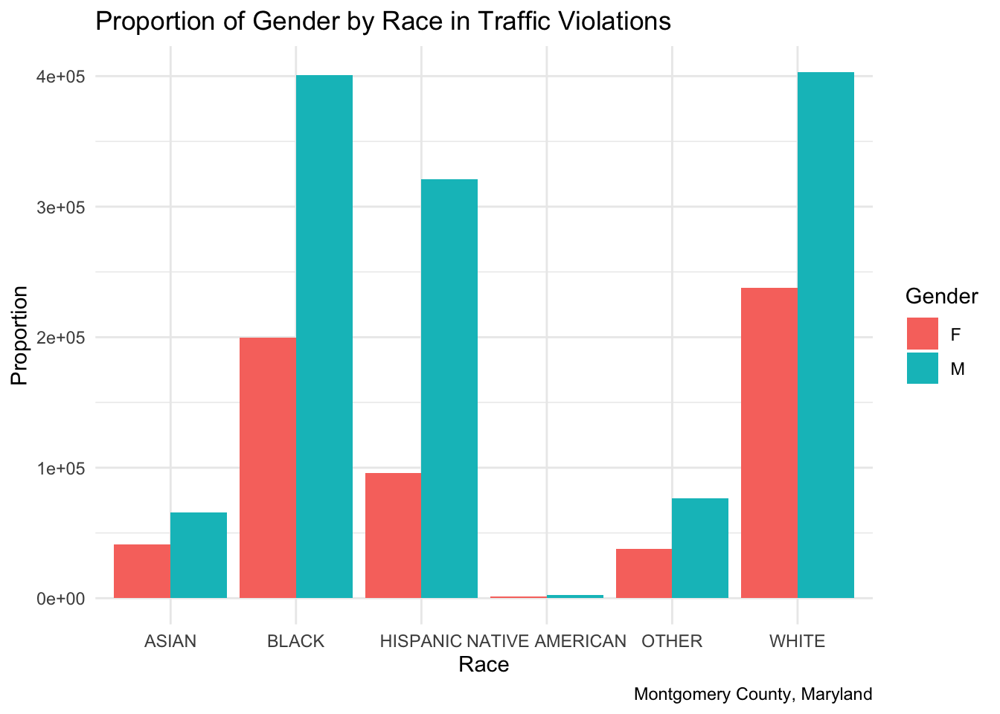
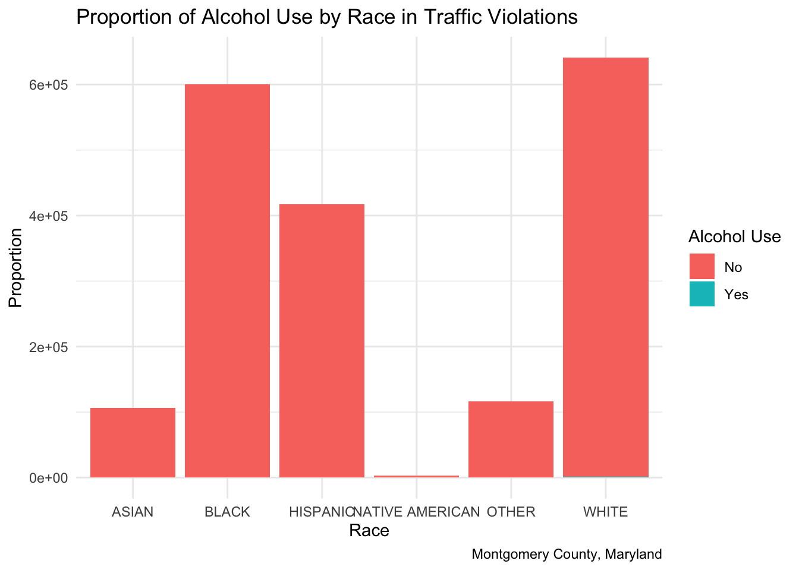
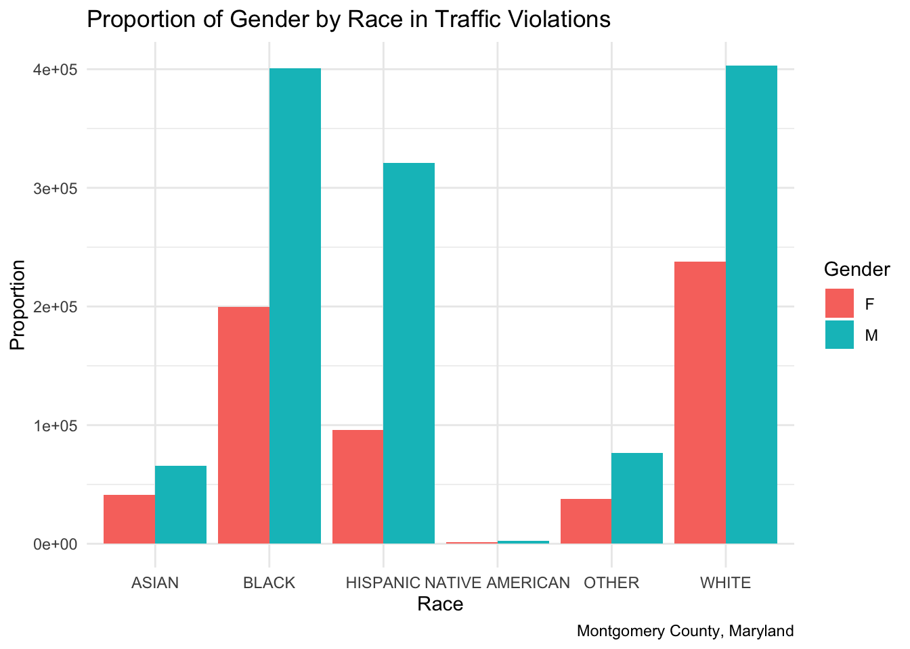
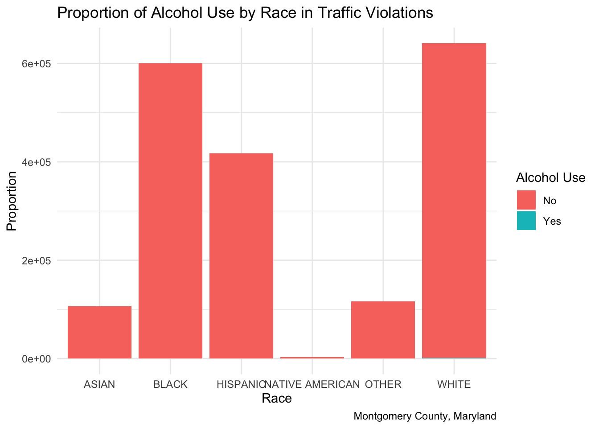
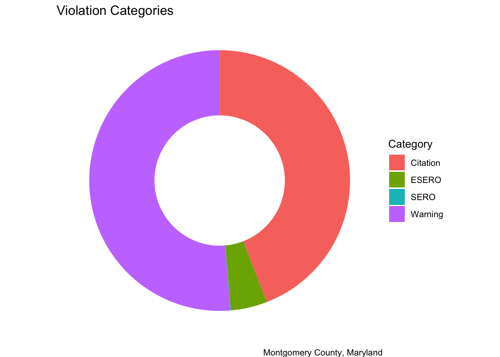

This comes from the file big_picture.Rmd.
George Floyd, Eric Garner, and Michael Brown are only a few examples of the fatal incidents that highlight a dangerous prejudice persisting in the United States. The United States is composed of countless different groups made up of different identities. A significant part of these identities is race. Just within this one country, there are six racial categories, as well as people who belong to more than one race. Yet, each of these groups is looked at differently. The United States has been seen to give rise to both prominent and unconscious biases. While always present, in recent times, there has been more news regarding cases of systemic racism as seen with Floyd, Garner, and Brown. This rise in attention towards racial inequality gives rise to the question of what influences are contributing to biases, especially on how police systems may show patterns behind the variations seen in the outcomes for different races.
This analysis focuses on these trends, what may be influencing them, and how they then can be targeted. We focus on the police system through traffic violations specifically in the area of Montgomery County, Maryland, by analyzing information such as the types of violations, the arrest characteristics, and locations. This approach aims to uncover if and how these disparities are due to systemic issues.
Traffic reports can have a variety of influences both from factors included in the data set and ones outside of it. To understand the possibilities of what is driving patterns in traffic violations, we made use of influential factors that were included in our dataset and appeared influential in our exploratory data analysis. These primarily included race, gender, if alcohol was involved in the accident, and if the violation was a car crash or a traffic violation incident. Using two datasets from Montgomery County’s records on traffic violations. Using these factors, we aimed to develop a method of modeling that would be capable of predicting accident probabilities based on these influences. This model revealed important patterns in the probabilities of accidents in Montgomery County to develop the thesis of our analysis: non-white populations of Montgomery County, Maryland have more instances of traffic violations when compared to areas of the county that are predominantly white.
To research this thesis, we aimed to analyze the potential relationships between traffic violations and accidents and race. The racial categories we worked with were six categories, Asian, White, Black, Hispanic, Native American, and Other. Each of these groups displayed different rates and characteristics of accidents throughout our exploratory data analysis. This was primarily shown by the visualizations below, showing the relationships between race and other variables given by our datasets. The first chart showcases the proportions of gender that were recorded to have traffic violations for each race, with the blue bars representing males and the red ones showing females. In general for each race, the larger proportion of traffic violations were for males, but the proportions did differ by race. The second chart shows the proportion of alcohol use for each race. Each race has one bar, which is colored partly blue to represent the proportion of violations that involved alcohol race, and red to show the ones that did not involve alcohol use. This chart showed that the majority of traffic violations for this county did not involve alcohol use, but the proportion that did not involve alcohol did vary by race. These exploratory plots show that there may be potential relationships between race and gender as well as race and alcohol use as well, indicating that including gender and alcohol use as predictors could be relevant.
The pie chart below shows the categories of violations colored to show the relative proportions of the data that fall into each category. Because there are differences between the categories, it additionally indicates that violation type may be informative in discovering patterns within the traffic violations to connect our predictions to.


Attaching package: 'dplyr'The following objects are masked from 'package:stats':
filter, lagThe following objects are masked from 'package:base':
intersect, setdiff, setequal, union
Therefore, to discover more valuable information, we additionally expanded our analysis to include race, gender, if alcohol was involved in the accident, and if the violation was a car crash or a traffic violation incident to develop a more overarching understanding of the patterns in the datasets to provide valuable insights behind Montgomery County’s accident probabilities and their influences. These inclusions were also aimed to uncover any potential influences working in combination with race to influence accidents in the county.
The findings resulting from our analyses provide insights into the way that Montgomery County’s police and government systems work, and where there are limitations in the equality of their current practices, thus pointing to where improvements could be made. The information revealed from the analysis presents Montgomery County, Maryland with a better awareness of how they may be able to prevent future accidents in common areas or within common groups or reduce their likelihoods through the examination of influential factors. This gives the county the knowledge to begin considering and addressing biases that are present within their departments and decrease the consequences. The disproportional effects in different areas and groups of people shows a common issue of inequality, a danger that can motivate Montgomery County to begin implementing changes. By addressing the key issues we have identified, the county’s police department and government systems can have a strong starting point on how to address these matters. With this, Montgomery County can later investigate further into the general patterns and trends uncovered.
Our study aims to delve into the relationship between race and systemic inequality, while maintaining responsible data analysis, objective findings, and considering social implications. Our goal is to provide insights based on data analysis specifically regarding the disparities that the communities of Montgomery County, Maryland face in their daily lives as they commute from place to place. We aim to inform more equitable practices within police and government systems and contribute to more equitable systems. This analysis is a step towards understanding and addressing the complex realities of racial disparities in traffic violations, paving the way for future improvements and further research.